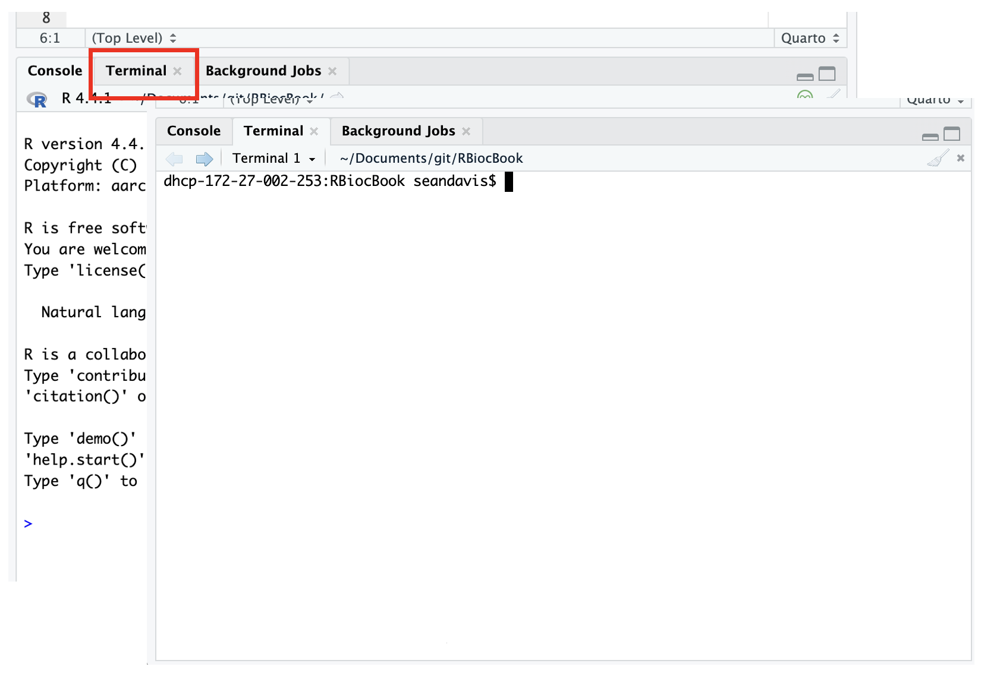

# URL of the TSV file (this is a fake URL for demonstration)
tsv_url <- "https://ftp.ncbi.nlm.nih.gov/pub/clinvar/disease_names"
# Local file name to save the TSV
local_file <- "disease_names.tsv"
# Download the file
download.file(url = tsv_url, destfile = local_file)4 Loading data
Common tasks in data analysis involve loading data from various sources, such as CSV or TSV files. In this snippet, we’ll discuss how to download and load TSV files in R.
4.1 What are CSV and TSV files?
CSV (Comma-Separated Values) and TSV (Tab-Separated Values) are both simple file formats used to store tabular data, such as spreadsheets or databases. The main difference is the delimiter used to separate values:
- CSV files use commas (,) to separate values
- TSV files use tabs ( to separate values
In both formats:
- Each line represents a row of data
- The first row often contains column names (headers)
Both formats are popular because they’re simple, readable, and can be opened by many programs, including text editors and spreadsheet software. TSV files can be particularly useful when your data contains commas within fields.
4.2 Downloading a TSV file using R
This section is just to get us a TSV file to work with. If you have a CSV or TSV file on your local machine, you can skip this step and read your own.
Let’s see how to download a TSV file from the internet using R’s download.file() function.
If you look in your file system, you should see a file named disease_names.tsv containing the data from the URL.
Tip
You can use the terminal to examine a file’s contents. For example, you can use head disease_names.tsv to view the first few lines of the file. This can be helpful to understand the structure of the data without loading it into R first. In Rstudio, you can also use the Rstudio terminal to run shell commands.

Activating the terminal in Rstudio
This code does the following:
- We specify the URL of the TSV file we want to download.
- We choose a name for the local file where we’ll save the downloaded data.
- We use
download.file()to fetch the file from the URL and save it locally.
4.3 Loading the TSV file into R
Now that we have a TSV file, let’s load it into R using the read.delim() function, which is designed for tab-separated files.
# Load the TSV file into a variable called 'df_sample'
df_sample <- read.delim("disease_names.tsv")
# View the first few rows of the data
head(df_sample) X.DiseaseName SourceName ConceptID SourceID
1 See Cases
2 (3r,5r)-fluvastatin response
3 (3r,5s)-fluvastatin response
4 (r)-citalopram response
5 (s)-methadone response
6 + FETAL MICROARRAY COPY IN REGION 9p13.2
DiseaseMIM LastModified Category
1 NA 27 Oct 2022 Disease
2 NA 08 Jul 2022 Pharmacological response
3 NA 08 Jul 2022 Pharmacological response
4 NA 08 Jul 2022 Pharmacological response
5 NA 08 Jul 2022 Pharmacological response
6 NA 23 Sep 2022 Finding# Get a summary of the data
summary(df_sample) X.DiseaseName SourceName ConceptID SourceID
Length:63672 Length:63672 Length:63672 Length:63672
Class :character Class :character Class :character Class :character
Mode :character Mode :character Mode :character Mode :character
DiseaseMIM LastModified Category
Min. :100050 Length:63672 Length:63672
1st Qu.:239842 Class :character Class :character
Median :607422 Mode :character Mode :character
Mean :454478
3rd Qu.:615551
Max. :620877
NA's :53490 Let’s break down what’s happening here:
-
read.delim()reads the TSV file and creates a data frame in R. By default, it assumes tab-separated values and headers in the first row. - We store this data frame in a variable called
df_sample. The prefix ‘df_’ is a common convention to indicate that the variable is a data frame. -
head(df_sample)shows the first six rows of the data, which is useful for a quick peek at your dataset. -
summary(df_sample)provides a statistical summary of each column in your dataset.
4.4 Additional tips
- For CSV files, you would use
read.csv()instead:df_sample <- read.csv("sample_data.csv") - If your TSV file doesn’t have headers, use:
read.delim("file.tsv", header = FALSE) - For large files, consider using
read.delim()orread.csv()with the parameternrowsto read only a portion of the file for initial inspection. - If you’re unsure about the delimiter, you can specify it explicitly:
- For TSV:
read.delim("file.tsv", sep = "\t") - For CSV:
read.csv("file.csv", sep = ",")
- For TSV:
Remember to always check your data after loading it to ensure it was read correctly!
4.5 Write data to a CSV file
Remember that we read the data from a TSV file. If you want to write this data to a CSV file, you can use the write.csv() function:
write.csv(df_sample, "disease_names.csv", row.names = FALSE)This will write the data frame df_sample to a CSV file named disease_names.csv without including row names. You can then use this CSV file for further analysis or sharing with others.
4.6 Working with data from Excel
When working with data that originates in Excel, the easiest way to get the data into R is often to save the data as a CSV file from Excel and then read it into R using read.csv().
There is also the readxl package in R that allows you to read Excel files directly. This package provides functions like read_excel() to read data from Excel files into R data frames. If you have Excel files, you can explore this package for reading Excel data into R.